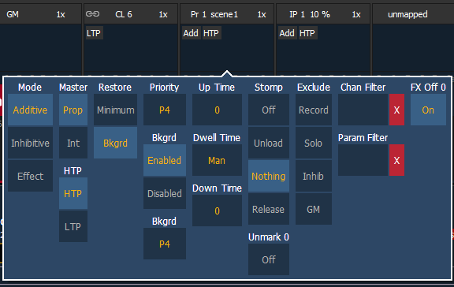
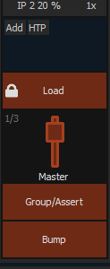

Presets and Palettes can be mapped to faders by using the fader configuration display. For information on how to use the fader configuration display to map faders, see Fader Configuration
The fader configuration display is found on Tab 36 .The Fader List , which shows all of the faders and their assignments, can be found in Tab 35.
Click or tab the second row of the fader page to access this properties display.
The following options are available when a fader is configured as a preset or palette fader:

You may define your fader as additive (contributes to the live output), inhibitive (limits live output) or an effect fader (presets only).
A fader can be assigned as a Master. When it is a master, its behavior as a Proportional Master or Intensity Master (I-Master) is drawn from this setting.
Intensity playback behavior can be set to HTP (highest takes precedence) or LTP (latest takes precedence).
Faders can be placed into restore modes of minimum or background, which is the default. When a fader is in the restore to background mode, the restore column of the fader list display will be blank. When in minimum mode, 'Min' will display in the restore column.
The restore mode of background means that when the fader is returned to zero, control will be restored to the background value, such as another fader or a cue.
The restore mode of minimum means that when the fader is faded down, control does not go to the previous background state but to the parameters’ minimum value.
The Independent setting for faders has been changed to priority. There are 10 levels of priority for faders. 1 is the lowest and 10 is the highest. faders can still be shielded, which means that their content is automatically made exclusive and can't be controlled by anything other than that fader and park, including by manual control. Shielded has a higher priority than 10.
Faders can have their background states disabled. Background states are enabled by default. When enabled, the content of the fader will act as a background or previous state for other cues and faders.
Background can have a priority assigned to it.
In previous software releases, when content was released, it always returned to the last fader that owned it. Background priority releases to the highest priority content that previously had ownership, provided that content has not be turned off or released.
There are 10 levels of background priority for faders. 1 is the lowest and 10 is the highest. When LTP content is released to background, it will go to the background state with the highest available priority.
This is the time for the fader to fade from its home position to its target position (0 to Full if additive, Full to 0 if inhibitive). The default time is 0.
This is the time the fader look will hold before starting the downfade. This can be set to a specified time, or to “Hold” or “Manual”. “H old” time maintains the fader values until the bump is pressed a second time. “Manual” time applies the fader values only as long as the bump is held. The default is “Manual”.
This is the time for the fader to fade from its target position to its home position. The default time is 0.
Stomp happens when all the content owned by a fader is now being controlled by other targets. The fader is being removed from the background , and once that happens, it would not be eligible to fade back. You can assign behavior that will happen when a fader is stomped.
When this option is on, marked content controlled by the fader will automatically be released when the fader reaches 0%. When the bump button is next pressed, the fader will fire. If this option is off, you would need to first press the bump button to reset the fader before pressing the bump again to fire it.
Note: This option is for faders that are set to Intensity Master.
Those exclusions include:
Channel and Parameter Filters can be used to allow only specified data to be played back. These are playback filters, and do not impact how data is recorded.
Tap or click on {Chan Filter} to assign channels or groups. Tap or click on {Param Filter} to open a list of available parameters that you can filter.
When a filter has been applied, an indicator will display in the fader ribbon. C will display for channel filter, and F is for parameter filter.
Press the red [X] to clear the channel or parameter filters listed.
Click or tap on the virtual buttons or fader to see a list of available configuration options.

The following options are available for fader buttons:
The following options are available for a fader: